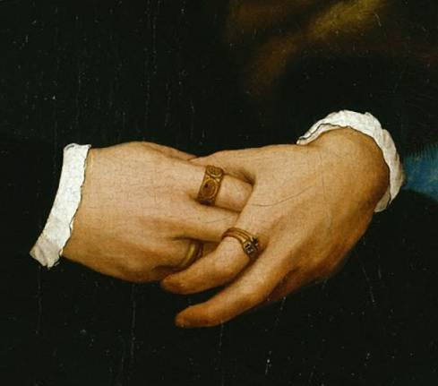
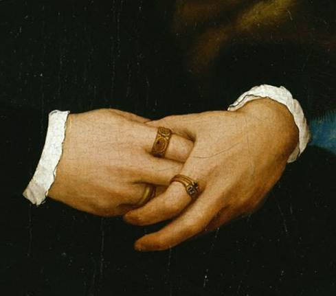

"I %#^$*@***#^ yesterday.
But I ***********."
Why, here in dust, entice me with your spell,
Ye gentle, powerful sounds of Heaven?
Peal rather there, where tender natures dwell.
Your messages I hear, but faith has not been given;
The dearest child of Faith is Miracle.
I venture not to soar to yonder regions
Whence the glad tidings hither float;
And yet, from childhood up familiar with the note,
To Life it now renews the old allegiance.
Once
Heavenly Love sent down a burning kiss
Upon my brow, in Sabbath silence holy;
And, filled with mystic presage, chimed the church-bell slowly,
And prayer dissolved me in a fervent bliss.
A sweet,
uncomprehended
yearning
Drove forth my feet through woods and meadows free,
And while a thousand tears were burning,
I felt a world arise for me.
These chants, to youth and all its sports appealing,
Proclaimed the Spring's rejoicing holiday;
And
Memory holds me now, with childish feeling,
Back from the last, the solemn way.
Sound on, ye hymns of Heaven, so sweet and mild!
My tears gush forth: the Earth takes back her child!
.jpg) 
[hi]
[hi2]
[hi2333333]

[hi]
[hi2]
[hi2333333]